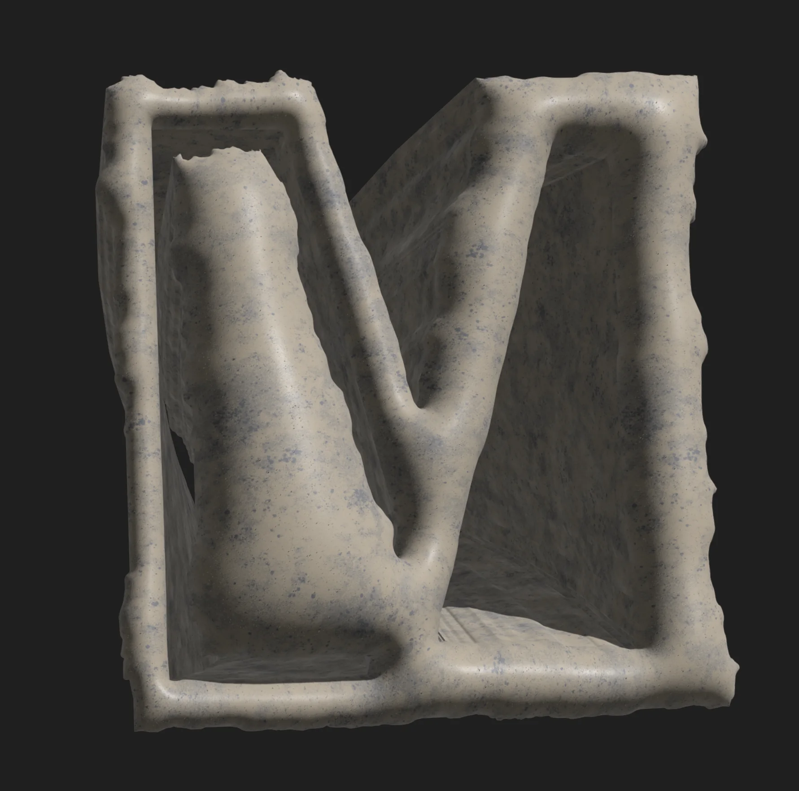
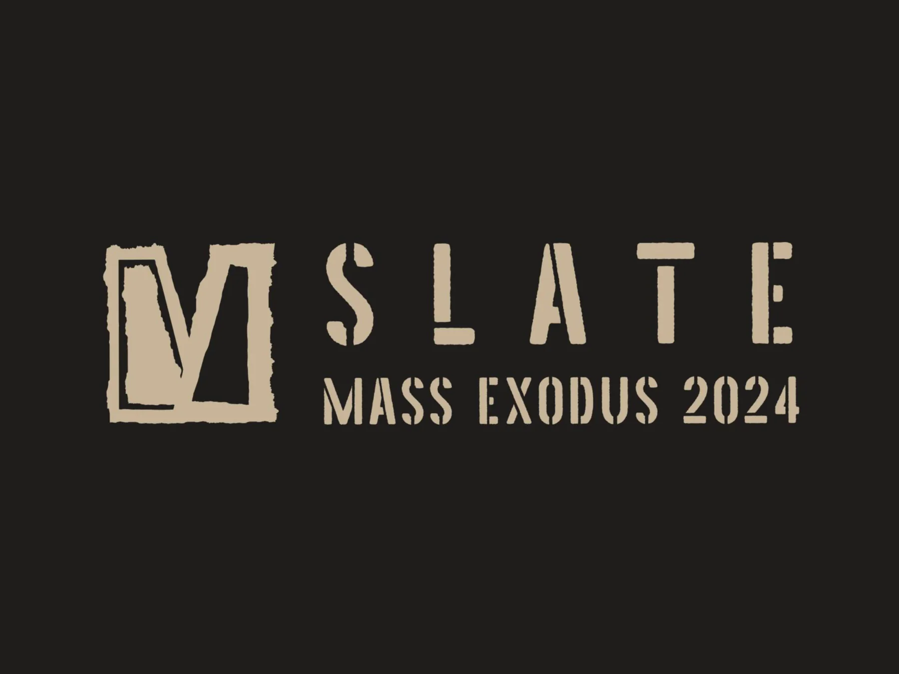
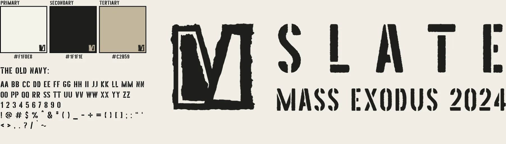

01 / 08
Concept
Define the central idea, purpose, audience, tone, and intended experience.
About the Show
In its simplicity and durability, SLATE serves as a pristine canvas, presented as a base, and a starting point devoid of excess. We intend to use this base as an invitation for the students to inscribe their narratives upon it. This event aims to offer a refined platform where the essential qualities of slate inspire creativity and personal interpretation.
In providing this canvas, we are careful not to impose a vision too complex, ensuring that the essence of SLATE—its raw, fundamental nature—keeps the student’s work as the star of the show above all else. Students are encouraged to project their stories and perspectives, utilizing the next-to-blank slate to support and display their concepts. The show’s design will be stripped to its core and polished to excellence, leaving room for the diversity of ideas that designers will bring to the surface.


